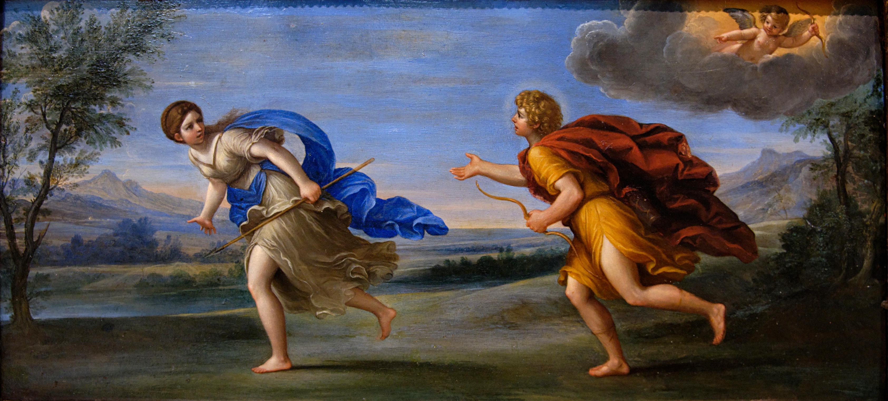

APRECIE ESSA REPRODUÇÃO DE UMA OBRA DE ARTE DE FRANCESCO ALBANI E ORIENTE OS ALUNOS A ANALISAR OS PERSONAGENS E SUAS ATITUDES. CONTEMPLE, ASSIM, A HABILIDADE EF15AR01 DA BNCC, QUE CONSISTE EM: IDENTIFICAR E APRECIAR FORMAS DISTINTAS DAS ARTES VISUAIS TRADICIONAIS E CONTEMPORÂNEAS, CULTIVANDO A PERCEPÇÃO, O IMAGINÁRIO, A CAPACIDADE DE SIMBOLIZAR E O REPERTÓRIO IMAGÉTICO.
AJUDE-OS A IDENTIFICAR ALGUMAS EMOÇÕES REPRESENTADAS NA OBRA.
